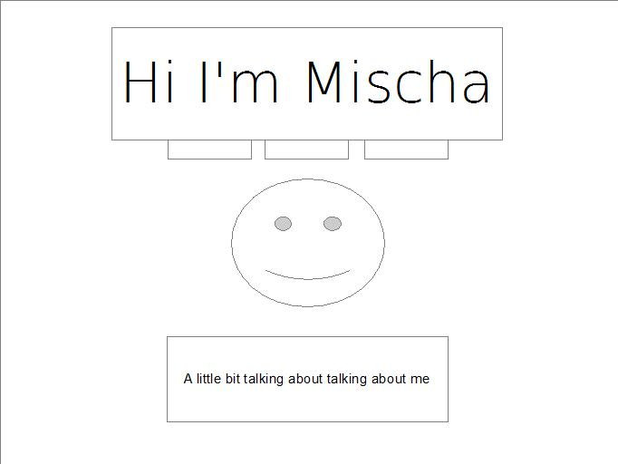
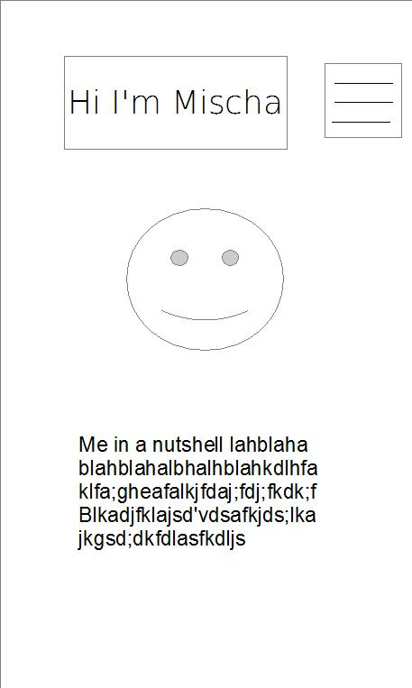
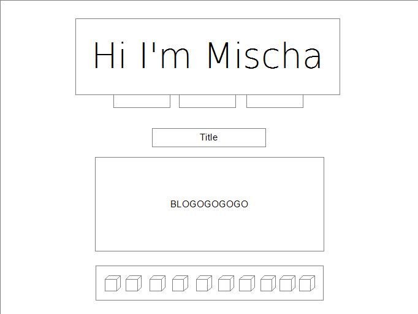
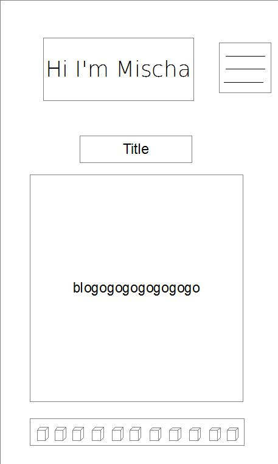

Writing computer code sometimes looks like letters and number flying from keyboard to screen and then something magical happening, but most of the time it means sitting and staring blankly at a screen, glancing out the window, staring at the screen a while longer, changing something, and then staring at the screen trying to figure out why it didn’t work. This week was a perfect example. A simple exercise I was working on involved changing the colour/visibility of some boxes. The first part of the challenge was simple resembled the first scenario - letters and numbers zooming across the screen and boxes changing. Then I got to the final step of the exercise and just as I was thinking “piece of cake” I inputted my code and… nothing.
Stare out window. Change something. Not working. Google? Change something. Not working. Stare at ceiling, then out window, back at screen, out window, back at screen, change something. Nothing. Compare code character for character to above code. Stare out window. Google. Stare out window. Use dev tools to check code line by line. Find error message. Google. Stare at screen. Change something. Change another thing. Stare at screen. Google. Stare at screen. Go downstairs to ask programmer with 30+ years of experience what I’m doing wrong. He stares at screen. Changes something. Googles. Changes something. Googles. Changes something. Googles. Scratches chin. I go back up stairs. Google. Stare at screen. Youtube. Notice a couple of funny characters on tangentially related code “[]”. Oh right. I chose the place where the thing was, but not the thing itself. Select the thing. CEELEEBRAAATIOOON. Two characters… [ ]… that is elegant. Look at those curves.
There are lots of ways to “stare out the window”. Pseudocode is a great start. Say the thing you want to happen out loud, and try writing it down. Very magical. Then try something, probably wont work but it is helpful for thinking, and sometimes you get lucky. Talking to oneself or a rubber ducky is also a great technique to get your brain out of its current rut. Once you get something part way there, error messages are great guides. Console.Log to test code is great once you get into the ballpark, as it shows you what your code does. Google has more answers than I have questions, and probably will for the foreseeable future. I love it. Asking others for help is great, because we all think so differently and sometimes just different thinking styles help you to solve something. If you have any energy left at the end reflecting on what worked can be helpful for future problems. Whenever I get a successful piece of code I always try to stare at it one last time in order to try to remember why that arrangement of characters worked and one which was just one or two characters different didn’t.
Within Javascript there are lots of great functions.
.map searches for your query and creates a new array with the results
.filter searches for your query, checks to see if the results meet a special condition, and if so creates a new array with them
.reduce simplifies an array by putting all of its elements together, either as a string or, in the case of numbers, with the operation specified.
I love the humour of the universe. Up until now I have following the SIY course through the videos provided rather than reading the text. Last week it was clear the third video did not correspond to the third question, but my time was a bit tight so I just went ahead and wrote a blog about the video I did watch. This week I was more caught up on course work so I did some digging and it seems that this particular chapter doesn’t have a video associated with it, so this week’s chapter is the one I did last week, so I’m taking this week to reflect on last weeks. Wonderful that specifically the chapter on mindfulness is the one that I missed, I suppose I shall have to be more mindful.
Well onto the topic at hand, a “mindful conversation”. The mindful conversation I had was with a friend about the differences in how we think. She thinks in pictures and feelings and I think in thoughts and words. As we shared our experiences one at a time, what I learned most was that simply because I think so abstractly, if I am not careful I can raise a barrier that cannot be crossed by the other. This is not because my thinking is better, but simply because it is different. Therefore whenever I am having a conversation with somebody who does not have a similar thinking style to me, I have to be very careful to build gates in my thoughts and remember to open them to help others access them.
The suggested technique which I find most helpful is to do less conscious practice than feels like work. This is very important to me that we increase our consciousness out of authentic thirsting and never out of an “I have to” mindset. Otherwise my experience is that my mind becomes full to quickly without ever achieving the definition of what is meant by “mindfulness”.
The third video in the SIY series, entitled Self-Awareness, can perhaps be best summarized by the phrase purportedly inscribed over the temple to Apollo at Delphi, ‘Know Thyself’. Emotional awareness, self-assessment, and self-confidence are all aspects of this. 1. Not denying emotions, but also recognizing them as other than self. 2. Objective observation of self which does not hide the uncomfortable or the wonderful, or twist truth into a story, but simple lefts the phenomenon of self arise as objects of observation. 3. Certainty that you are enough as you are; and that simultaneously you are always growing, always improving. Clarity that you deserve to thrive, and are capable of great deeds, however small they may seem to you or those around you.
It is such a simple instruction, but is the work of many lifetimes. The manipulations and devices of our lower selves are many and cunning, veiling much from even our most earnest striving. This protective layer serves to shelter us on our way as we learn and grow, but flummoxes us time and again. Knowledge of self is perhaps the most powerful capacity available to us as human beings, but requires an immense humility, empathy, and grace to bear. Thus the journey of discovering emotional awareness, self-assessment, and self-confidence is the journey of finding empathy, humility, and grace, in order to take up the mantle of knowledge of self.
JavaScript is a much more dynamic language than HTML and CSS. HTML is your steady, organized friend, nothing fancy, but keeps everything in order. CSS is your stylish friend who is completely disorganized under the surface no matter how hard they try to get themselves together, but still looks great. JavaScript is the genius friend who can forget their best friends name but crunches numbers instantaneously and if they can keep their head about them with access to the right resources seems able to learn absolutely everything. (This analogy however should not be taken too far, given that once more languages are entered into the “friends arena” these traits are easily exposed in their relative nature.)
To wrestle JavaScript’s genius into a useable form, two helpful concepts from computer science are ‘Control Flow’ and ‘Loops’. Control flow is the order in which events occur. Loops are re-occurring events. For example the control flow of a morning routine might look like “wake up, get dressed, brush teeth, eat breakfast.” However if you didn’t have any tooth paste, that ‘if’ might mean that instead of directly brushing your teeth you have to go ask a housemate if you can borrow theirs, thus a change in the control flow. A loop when eating breakfast might go as follows. Start eating your cereal by putting your spoon in your bowl. Move some of the contents of the bowl into your mouth. Chew. Check if there is more. If there is more use spoon to put more in your mouth. Chew. Check if there is more. If there is more use spoon to put more in your mouth. Then depending on the type of loop you might stop once your bowl was empty, or once you were full, or whichever came first.
All of this is accomplished using data. Two different ways to store the data are arrays and object literals. The difference between them can be very confusing because in truth arrays are objects, they are just a special kind. The major difference is that arrays catalogue their data using a numeric data and object literals use “strings” of characters. Another way to understand the difference is that arrays store a lot of different options under one name. An array of cars might have 60 different car names in it. Object literals on the other hand store many different attributes about one object. For example, this car is fast, is green, runs on diesel, and only flies to the moon once a year.
The way the JavaScript works with all of its objects and arrays is through functions. Functions deliver all the different parts in the order coded into the function, which allows for complex data manipulation in a relatively straightforward manner.
While I was rebuilding my site this week I tried to keep in mind the notion of the process over product. To keep reminding myself that the point was to learn as much as possible and to learn to build in the right way (mobile first) rather than just trying to satisfy my sweet tooth. I can’t say every choice I made was process over product, but with almost every choice I made I thought about which I was choosing for.
To me this connects directly to the SIY content this week. There is no one ‘best’ way to meditate. Each person needs to find what works best for them. That being said, there are certain ways that many people have found to be the most effective. It is not completely random whether sitting cross legged or standing on your head are of greater assistance while meditating. I really appreciated how clearly the brought this point.
What caught my attention this week was how refined mental awareness can penetrate so intensely into the physical world as to ward off illness. It is so easy to forget how powerful our attention is.
A responsive site is one which is made to accommodate different screen widths. A responsive site changes the size and placement items accordingly to optimize the experience of users on devices of all sizes. These day people access the web on many different sized devices and a site that is not responsive can lead to a very frustrating experience for users. A good practice in responsive design is ‘mobile first’. This means that when devices are reading the code, the default is for the smallest screens, which presumable also have the least processing power. There are clauses in the code however that tell larger screens, ‘oh hey your display is going to be different, come check out what is written here to receive your special instructions’.
A common practice on the web today is build sites using frameworks such as bootstrap, foundation, and skeleton. Frameworks most important function is that set up code to be responsive from the get-go. They also have lots of helpful shortcuts based on some basic understandings. This can however be problematic. A framework adds lines of code that a device has to read which can slow down a site. Using a framework also means that your site will have to confine to the type of environment that framework is designed for.
Another common practise is to create a wireframe before coding up a site. This is a rough black and white sketch that helps developers assess what boxes inside of boxes they will need to accomplish the design, assuming they know enough about what they want and how to do it to then translate this. In my case my wire frames look only vaguely similar the pages I ended up building because as I created the site I learned about new techniques I could use, and changed my mind about some design decisions.
   
The premise of the Search Inside Yourself (SIY) course is quite simple. As the man with the job title of ‘Jolly Good Fellow’ at Google Chade-Meng Tan says, "…the real reason we started SIY is that I want to create the conditions for happiness for my coworkers and for the world." In order to package this for the market, Tan documents all the ways in which people who have trained themselves to be happy using mindfulness are better workers. Last year his organization was nominated for the noble peace prize.
Their approach is simple. Use the very basic human capacity of attention to cultivate, “a calm and clear mind on command." They use cutting edge science to illustrate that there is far more going on in the world then we are aware of. A prime example is of the literal gut intuition, a physical reaction taking place before the mind consciously grasps a situation. Learn to be attentive they say, and you will learn to control your relationship to the world by noticing elusive signs and making choices before consequences unfold.
All of this is great and wonderful. Having semi-consciously, and with wavering attention, experimented with similar approaches since my early teens, I have experienced the benefits of ‘two minutes of mindfulness a day’ and other such practices. I think it is important to note though that these are just one layer of the onion. A question I have been carrying for years centers around the role of passion. Recently I had an experience with a co-worker/boss that I found illustrative in this regard. Core to the mandate of the organization we were working in is the importance of finding the growing edge for society and the organization’s staff concurrently. If you aren’t growing yourself, learning about and changing your patterns, and pushing yourself to be more loving each day, you need to find another job. Not because they no longer value you as a human being, but simple because that is core to how the organization functions.
Upon joining the organization I was soon relied upon for my even temper, shrewd discernment, and ability to learn quickly. As the months passed, this colleague often asked me to find small ways to not just excel at completing my tasks, but to do so on my growing edge. To find ways to be more loving in how was I working. One day it came to a head. This colleague had observed certain patterns and asked me about them during a regular check-in we had. In that moment I had a choice. I could continue in a dispassionate way and converse with them about the topic they had identified without actually touching it internally. We could observe it objectively from outside. Or I could take it on as a part of me. I chose to let it fill me. My colleague was astonished. At our next check-in they shared that the fire in my eyes alone had been enough to make them uncertain about whether they could continue to do this deeper level of work with me. I shared that it was an on off switch and I would be happy to keep my process to myself, but if this colleague wanted to do the deeper work with me, this fire was part of the process. It is who I am.
I share this because I am curious about the role of our messy passionate selves in creating a more beautiful, peaceful, and loving world. I do not doubt the importance of developing mindfulness, learning to listen completely to another without letting our attention wander, or preempting emotional states with body awareness. But when exploring the layers of the onion, I think we have to be careful to not become, as a dear friend referred to it, mindless. Not to become so ensconced in perfecting equilibrium that we lose our humanity. Search inside for your whole self, not just some parts.
(P.S. I do not think that Chade-Meng Tan would necessarily disagree with me. I am simply elaborating upon a specific part which I feel is important. Then again, maybe he would. Either way I’m sure he would do it happily.)
There are many different ways to achieve a layout on a webpage. One of the most popular ways is “the grid”. It is achieved using a base layer of rows that stretch across the entire page, and using varied column widths within each row to create boxes. One major advantage of this is that if the columns are constructed using percentages, it is easy to make a grid “responsive” i.e. grow and shrink in accordance with users screen size. This wasn’t a big deal fifteen years ago when nearly all users were on desktops or laptops, but these days many users have two or three different access points for the web, and each of this is a different size.
To help humans and machines understand what is what on a website, semantic structure is often used. Naming something “header” or “footer” or “nav” (navigation bar) can make code a lot easier to decipher. Web development is full of such pockets of meaning, and new ones are always being built, as bit by bit, or byte by byte, people create digital frameworks for our lives.
Learning web development in 2016 begins with Hyper Text Markup Language (HTML). It is a simple language that almost anybody can learn. Once you have a basic understanding of HTML, you will then learn Cascading Style Sheets (CSS). If HTML is the bread, CSS is the butter. Sure you could get all the information/filing stuff from bread/HTML, but we need flavour. We need design. We need the buttery (and maybe even jammy) goodness of CSS. Both CSS and HTML function on a Document Object Model (DOM).
Switching analogies, the relationship between HTML/CSS/DOM is similar to one found in western pop music. When the song is first written, the lyrics and music on paper are the HTML. When the song gets recorded or played, that is the CSS, the styling of it. All of it is done in DOM, just as all western pop music is created using the heptatonic scale do re me fa sol la te do. One could use another system of organization to DOM, but just like nobody writing western pop music seems likely to ever use a different scale, googling alternatives to DOM is equivalent to an archaeological dig.
Forgetting about pop music, the actual process of designing websites today is more like a Russian doll of boxes. You make one box around everything. Then within the big box you identify the next size of box(es), cutting up the content into more and more particular boxes until each box only has one object or element in it. Then the page can be coded using the DOM model, with each object being identified by naming it in the order of the boxes it fits into, i.e. its box heredity.
Continuing with boxes inside boxes, one other crucial element to understand is that each of the individual objects/elements that have been isolated has their own set of attendant boxes. These include the border around the element, the padding inside the border surrounding the element, and the margin surrounding the border. Boxes inside boxes!
Timebox. Just the sound of it makes me nervous. However, reading through the materials, I found most of it interesting. Meditation has long been a peripheral interest of mine. Flow state? I enjoy that, although only when I’m in my flow. For me it comes down to what Jonathan says in counterintuitive productivity.
“A good rule of thumb: The more productivity tricks you need to get it done, the less likely it is that it’s meaningful to you.”
I enjoy a good race just as much as the next person raised in competitive sports. What rubs me the wrong way is the notion that by somehow optimizing life to the nth degree, perfection will be achieved. I can see the value of timebox for specific instances. Okay, we are going to do x. One hour, go. But I know I thrive off variety. Setting the stakes high sometimes is great. But if it becomes the default, I often find that I lose more than I gain by missing out on the offerings of other approaches. I don’t have any inherent objections to boxes. It is just that once we get into box and linear mindsets, the easiest thing to do is to stay there. So long as boxes remain agreements that are constantly being affirmed by consciously consenting parties, they can serve. As soon as they become rules, rigid and serving nought but their own rigidity, I think it is time to circle round again. But I suppose I shall just have to try timebox over the coming months and see how it feels.
While watching Shereef’s digital fireside talk, a few things stood out to me. The first is that while DBC has been marketed from the beginning as a, “learn enough so that somebody will pay you to keep learning” experience, the entire model is based on “learning for the joy of learning.” Without this second part, it does not work.
This is very exciting to me because education which isn’t founded in a love of learning feels very empty. I am looking forward to engaging in this culture of learning. I appreciate being able to follow my inspiration when learning, while still having a path through the woods to follow so that I don’t just walk in circles. Nothing in the talk changed my expectation of EDA but it (pardon the pun) light my fire and filled me with excitement to be embarking on this journey. I can see that there will be many challenges along the way which cut right to the core of who I am and how I work, and I know there will be many more challenges that I have no inkling of at this time, and I look forward with curiosity to all of them.